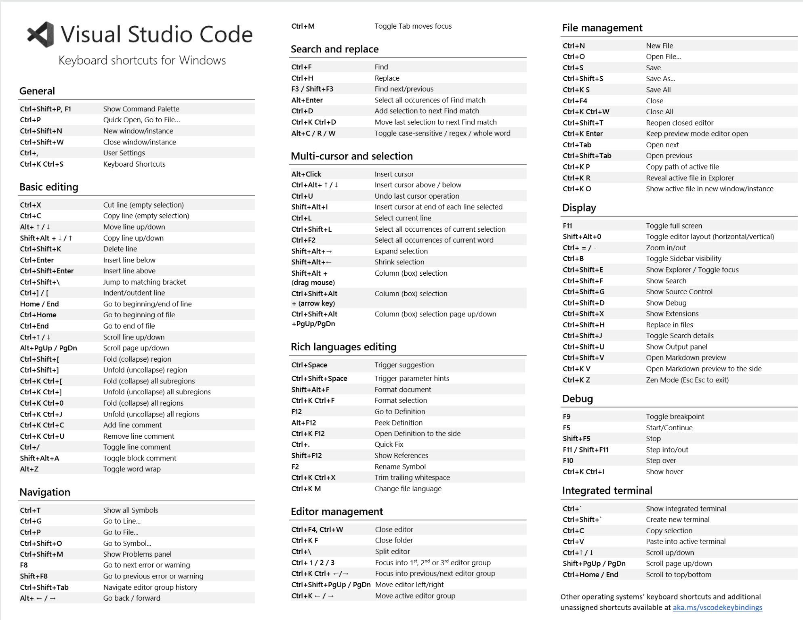

VS Code Shortcuts
- cmd + B : use for the show files.
- cmd + ~ : use for the open and closed terminal.
- cmd + P : use for the quick open menu.
- cmd + \ : use for split editor window.
- cmd + W : use for the closed file.
- cmd + shift + L : use select all matches and then edit or del.
- cmd + D : duplicate line down
- opt + D : use for add selection to matches. (You select one by one)
- shift + opt + down : use for the duplicates lines and paste it there down.
- shift + opt F: format file.
